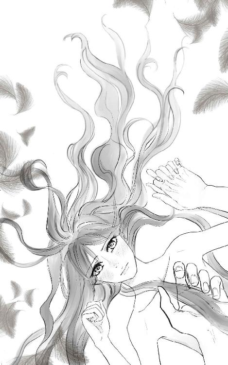

| 漂鳥ライダー (イーデスブックス) | |
| 水田歩 | |
| (2018) | |
『女は港、男は船』と誰が言ったのだったか。
男こそ、好きな相手をみつけると巣作りをしたがる生き物だとイチは思う。
「行くのか」
カラカラと引き戸を閉めて、鍵を郵便受けに投げいれようとした時に声はかかった。
いつにない剣呑な声、睨むような眼差し。
イチは不思議そうに男を見つめた。
大きな躰がイチの前を塞がるように立っている。イチが黙っていなくなろうとしていることを怒っているのか。
『明日。あんたが海に出てる間に、この街から出ていくよ』
昨日、抱かれる前に言っておいた筈だ。イチの宣言に、男も無言で頷いていた。そして、いつにもまして激しく抱かれたのだった。だるいけれど、その後にぐっすりと眠ることが出来たから眼ざめはいい。
それに二人は元々、恋人ではない。
時間の空いた時に躰を繋げるだけの付き合いだった。尤も、イチは気まぐれに男に抱かれに来たが、男は可能な限りイチの為に時間を空けてくれていた。男はイチの心を望んでくれていたようだが、イチは心をやりとりするつもりはなかった。そのことは躰を初めて重ねる前に言ってあったし、男も了承していた。
「うん」
イチは近寄ると、男の掌に預かっていた鍵を乗せた。
ここでの仕事は昨日が最後だった。
繁忙期が終了したので工場は縮小され、臨時スタッフが寝泊まりしていた寮は春まで閉鎖される。数か月にわたって寝食を共にした『仲間』は三々五々、次の場所を求めて散っていった。
イチだけが、男と最後の情を交わすために残った。
......もう一人、無理を言って残って貰っていた。昨日までの同僚、テツだ。彼はイチのバイクの隣で己の鉄馬を暖機していた。テツは男との別れが拗れた時の助っ人だった。一九〇センチを優に超えている身長と、重量級ボクサーのような体躯。頭髪と眉毛を剃り落とした異相。テツのいかつい眼差しは、男達を後ずさりさせる。けれどテツが笑えば、くしゃっとなって可愛いのを知っているのはイチだけかもしれない。
「今度はいつ来る」
イチへの気持ちを押し殺した声が背中に突き刺さる。振り返れば男の眼が、欲と熱を孕んでいた。その手はイチを引き止めたい激情を拳の中に握りしめている。
「そうだなー。また同じ時期じゃね？」
頭の中の年間カレンダーをめくりながらイチは答えた。
「ここに居つく気はないのか」
男は言いたくて、しかし自ら禁じていた言葉をとうとう口にしてしまった。
「ない」
対するイチの答えは簡潔だった。イチはもう、男を振り返らない。バイクへの距離が近くなる分だけ、男が遠くなっていく。
「イチ「それに、あんたとの付き合いは、寮が閉鎖されるまでって約束だ」
縋ろうとする男に、イチはキッパリと言い切った。
イチは季節労働者だ。日本全国を南から北までくまなく移動して、ある期間だけ人手を必要とするところに居つく。数週間あるいは数ヶ月の間、労働力を提供する。かわりに幾ばくかの金と三度の食事、それに寝泊りする場所を与えて貰う。終われば次の仕事を求めて、相棒のバイクで旅だつ。
バイクに触れると、イチは男に言葉を投げた。
「仕事を求めて旅する『漂鳥（ひょうちょう）』だってこと、知ってるだろ」
イチは好んでこの言葉を使う。
――そういや、いつから自分のこと『漂鳥』って呼ぶようになったんだっけ。
マシンを暖機し始めたイチは、ぼろろろ......とエンジンの音が腹に響くのを感じながら考えてみた。
それまでのイチは自分のことを『渡り鳥』と呼んで、気に入っていた。
『渡り鳥っていうのは渡りを行う鳥の総称のことだ。別名候鳥とも言う』
教えてくれたのは、週末になると白鳥を観察している北の男だった。
『そいつらに対して、渡りをしない鳥を留鳥って呼んでいる。渡り鳥には数種類ある。日本に夏に飛来する鳥を夏鳥、冬に渡来する鳥を冬鳥と呼んで区別してるんだ。年二回、春と秋に日本を通過するものを旅鳥と呼ぶ』
へええ、と男の腕を枕に聴いていたものだ。子守唄のように心地よく、眠りに落ちかけていたイチの髪を男が撫ぜた。
『君は漂鳥だね』
聞きなれない言葉にイチはパッチリと眼を開けた。
『ナニそれ』
『一般的に北海道や本州くらいの範囲内で、棲む場所を変える鳥は漂鳥と呼ばれてるんだ』
『いいね』
今度からそう名乗ろうと思った。自分にピッタリの呼び名がわかってイチは幸せな気持ちで眠りの国の門をくぐろうとした。
『僕は君を留鳥にすることが出来なかった』
深い諦めを伴った、ため息と言葉。
そ、と唇がイチの髪に落とされた。
『いつか君が、還るべき場所を見出すように』
ば、とイチは起き上がった。
『どうした？』
『気が変わった。今、出発する』
『どうして。日が昇ってから旅立てばいい』
男は引き止めてきたが、イチは脱ぎ捨てられていた下着やライダースーツを身につけてしまった。ブーツに脚をつっこみ、玄関に置かれたままだったリュックを背中に背負う。
『イチ』
男の端正な顔が痛みをこらえるように歪んだ。
グローブを嵌め、ヘルメットを抱えれば準備は完了だ。
『じゃ』
イチが短く別れの言葉を言えば、手に紙幣を握らされた。
『なに、これ』
イチは手の中の十数枚はある一万円札を眺めた。
『持っていきなさい』
男が威厳を込めてイチを見下ろした。そうすることでイチの恋人から遠い大人になってしまったことに男は気づかなかった。
『その日暮らしなら、いくらあったって邪魔じゃない筈だ』
瞬間、イチは怒りとともに金を男に叩きつけた。
『手切れ金なんか貰わなくったって別れてやるッ』
男は妻子を置いて単身赴任していた技術者だった。
『イチ、違うっ！ 妻とは離婚を前提に協議している。君さえ望んでくれれば、僕はっ』
男の悲痛な声を背中に受けながら、イチはバイクにまたがったのだった。
――泣きながら国道を走ったってのに。別れた男から教わった名前を名乗ってるなんて、未練がましいかなぁ。
イチはバイクのあちこちに眼を走らせながら考える。けれど、自分にはこの呼び名が合っていると思うのだ。
眼の前の男は、イチがたびたび口にしていた『漂鳥』という言葉の意味を、今日ほど噛み締めたことはないだろう。昨日までの、腕の中で喘ぎ艶めかしく乱れていた人間はどこにもいない。いるのは、ライダースーツに身を固めた渡り鳥。
男は引き止めようと試みた。
「ここにだって仕事はある。いくら鳥でも、休まずに飛び続けることは出来ない」
男の言葉にイチは肩を竦めてみせた。
「休んでるさ。あんたみたいな宿り木は沢山ある。羽をたたむ場所に困ったことはない」
イチはわざとらしく、今にも走り出さんばかりの元同僚に顎をしゃくってみせた。
イチが求める季節労働は、農村や漁港に多い。
そのなかには『若い男』のカテゴリーに六〇歳まで入ってしまうような村もある。残っている四〇歳以下の男は、貧乏クジを引かされたか責任感が強いかのどちらかだ。
彼らの暮らしている場所には、若い女もいなければ若い男用の娯楽もない。
突然現れたイチに男達は魅せられる。
身長こそ一七〇センチ近くありはするものの、イチの印象は中性的だ。腰まで届きそうな黒髪。肉体労働者なのに、真っ赤になったあとはすぐに白く戻る肌。筋肉がつかない骨格。吊り上がった瞳に引き結ばれた唇。普段のイチは、喧嘩を売られるほどふてぶてしい。なのに時折、儚い表情を見せる。あどけない笑顔を浮かべる。
男達は自分にないもの、焦がれてやまない何かをイチに見出すのだろう。花に集まる蝶のように、その手を差し出してくる。イチも人恋しい。好みのタイプがどこにでも転がっている訳ではないから、来る者は拒まないことにしている。
けれど、イチには決めていることがある。
『好きになるな』
『あんたの腕の中から出て行く時に引き止めるなよ』
男達の腕が自分の躰を捕まえる前に、イチは必ず釘を指す。相手がうなづいたら、ようやくその手を取った。
イチは相手に心を預けないように自分を律している。ところが肌を重ねることで、男達は勘違いしてしまうらしい。
『コイツは俺のモノだ』と。
ある時から、欲望をぶつけ合うだけのセックスがガラリと変わる。
男達はイチとの約束があるから、言葉にはしない。ただ、イチを見つめる眼差しで。あるいは蕩けるような愛撫を施すことで伝えてくる。そうなると、イチは男との別れを算段し始める。嬉しくないわけはない。けれど、ほだされるわけにはいかない。男達から与えられる愛を信じて痛い目に遭うのは、自分だ。
彼らはイチを引き止めるために、あらゆることをした。
バイクの何かを盗まれたり、壊されたりするのは日常茶飯事。目が覚めたら裸で監禁されていたこともあった。
それからは旅立つ朝、一緒に働いた男の中で一番ケンカに慣れている奴に迎えに来て貰うのだ。
助っ人料は煙草ワンカートン。あるいは酒ひと瓶。もしくは夕飯一回で事足りた。
......まれに躰を要求されることはあったが、『一回なら』と要求をのんできた。しかし、助っ人である筈の人間がストーカーじみてきた時には心底怖くなった。なんとか振り切って逃げだしたが、街に入ったところでイチは携帯電話を解約した。位置を検索されないように用心の為だ。
今はウエブでイチのバイクの写真と一緒に『拡散希望！ 盗まれたバイクの情報求む』とでも呟かれれば、あっというまにイチの所在など知られてしまう。別の街へ更に移動してからバイクを売って、ナンバープレートや車種からアシがつかないようにした。そして更に別の街に行って中古バイクを手に入れた。
本当は下取りに出したショップで次のバイクに買い換えるのがてっとり早い。しかし、イチはあらゆる痕跡を消し去りたかった。
以来、助っ人要員は見極めてから頼むことにしている。
男はイチとテツを火のような瞳で睨んだ。男も腕っぷしに覚えがある。テツもヘルメット越しに敵意を感じ取っているのだろうが、しかしなんとも思わないらしい。
男は平然としている二人をしばし見つめた。やがてため息とともに言葉を押し出した。
「......お前が帰ってくるのをいつまでも待って「待たなくていい」
イチは男の言葉を予想していたから被せた。
「可愛い嫁を捕まえてさ、幸せになりなよ」
虚を突かれた男を置き去りにして、イチとテツは遠ざかっていった。
「まともな男だったな。残ればよかったのに」
男と別れてから数時間後。
ドライブインで昼食を取っていると、テツに言われた。
イチは薄く笑った。
「自分がどうしてこんな暮らしをしてるか、思い出してみなよ。まともな生活ってヤツと仲が悪いから、旅をしてるんだろ」
テツが思い出したかのように複雑な表情になった。ボソリと呟いてくる。
「俺にはムリだ。だけど、お前は望めば定着できるのに」
仕事を渡り歩く季節労働者には、旅に魅入られている人間と定住したいのにできない人間がいる。
テツは自分を後者であるかのように振る舞う。しかしイチから見れば、テツこそが前者で自分は後者だと思っていた。
飄々としているテツは、イチの憧れだ。その日暮らしを、旅から旅への人生を心底楽しんでいるように見える。あんな風になれれば、後ろ髪を引かれる思いをしなくて済むのに......、と思う。
ふと。
「どうして男は渡り鳥を欲しがるんだろうな」
イチがため息混じりに言えば、テツが鼻をうごめかした。
「そりゃ、男ってのは美しいものに眼がないっていうか。逃げられれば追いかけたくなるっていうか」
テツのライトな答えに、イチはむくれた。
「バカにしてる。どうにか籠に閉じ込めたら、途端に飽きるくせに。無理やり捕まえたのはそっちだってのに」
イチの愚痴めいた言葉に、テツは飯をかきこんで返事をしない。
「......『一年病』を克服できるヤツなんて、どうせいないのに」
イチが口の中で呟いた言葉はテツには届かなかったらしい。
「あ？」
「なんでもない。漂鳥ライダーが性に合ってる、てこと」
食べ終わると二人は、あっさり右左に別れた。テツは北上し、イチは南下する。
腹はくちくなり、愛車は満タン。昨日までせっせと働いて得た金で、懐も暖かい。求人サイトから連絡して、次の職場は既に抑えてある。
時間と金と距離の掛け算。イチは時間に余裕がある時は、高速道路は極力使わない。のんびりと下の道を走るのが好きなのだ。次の職場へは1週間もすれば到着する行程で、寝袋も自炊道具もある。
「シャワーしにオートキャンプ場に行くのもいいな」
車と違って、防御性の低いテントで寝る事になるが。日本は安全といっても、自然の真っ只中に道があるところも沢山ある。熊も鹿も猿もいるから、襲われる確率は高い。
危険なのは獣だけではない。イチはどこにいっても性の対象にされた。それなりの対処法は心得ているが、抵抗したほうが後々躰に遺るダメージは大きかった。命や躰を奪われる覚悟はしているものの、危ない処に自ら飛び込まないように気をつけてはいた。
「はぁ......癒される」
イチはヘルメットの中で呟く。仕事と仕事の合間、イチは『ライダー』に戻る。走っているあいだは全てのしがらみが吹き飛ぶ。
煩わしい人間関係は道の上には存在しない。イチは道路でなら、素の自分でいられる。他の走行車と折り合いをつけることが苦痛ではない。
エンジンが吐き出す、熱い排気。己にぶつかり、後ろに流されて行く空気の塊。愛車の振動こそ、生きている証に思える。
バックミラーを見ても、車は数台しか走ってない。みな、好きなスピードで適当に間隔を空けている。田舎の、ぽかんとした雰囲気がイチは好きだ。
海岸線に沿って走る道は平坦だが、カーブで多少の変化が楽しめる。気候は暑くもなく寒くもない。風は少し冷たい程度で強くはない。空は澄み、絶好のドライブ日和だ。海が寄越してくる、キラキラした反射は濃いカラーのバイザーで遮っている。
「さってと。仕事に取り掛かる前に楽しむかあ」
イチはクラッチを操作し、スロットルを開けた。少し、躰にかかる圧力が増える。メーターが、ゼロのある左側から右側に傾いだ。ぽてぽてとした速度も楽しい。が、押し寄せる気体の圧力を、なにくそ！とこじあけて前に進む位のスピードも楽しい。
「海の匂いを嗅ぎたいなっと」
イチは思いついてシールドをあげてみた。途端、青い空と蒼い海の色が飛び込んでくる。魚くさいような磯の香り。道路ぎわまで迫っている松林と土の匂い。イチは眼の中に入り込む光と風圧に、まぶたを眇めた。
眼の周りの防壁をなくすことで発生するトラブル。御しきれずに転んだ時のことを考えると、シールドをさげておくべきだ。しかし障害物が落ちていない道路と、フルフェイスのヘルメットにもイチは安心していた。
イチは自分の性格のことを『一年病』と呼んでいる。一年、同じところで働いていると万遍なく嫌われるからだ。それはもう、職場をいくら変えても絶対的にそうなのだ。
イチはつるむのが苦手だった。
――単に人の輪に囲まれて、みんなと笑い合いたいだけなんだけどな。
イチにはそれが出来ない。人の話に興味がないから、話題についていけない。たまに話を振ってくれた人がいても、上手く答えられない。言葉のキャッチボールはいつしか間遠になっていき、イチと皆との間にしらじらとした空気が横たわる。皆、微妙な微笑みを浮かべたままイチから遠ざかっていく。
学生の頃からそうだった。
グループワークは教師の仲介がなければ班に入れて貰えない。遠足や自習時間、自由に行動してよい時間が苦手だった。
それでも学生の頃はまだ良かったのだ。イチとクラスメートの間には、確かに目に見えない国境があった。お互いにパスポートを持っていなかったが、利害が重ならなければ一人でいられた。
むしろ社会人になってからのほうが大変だった。
初めての職場のメンバーは経験年数が若い人でも五年以上の職場。皆が友達のような職場でチームワークは抜群だった。
イチにも同じように接してくれた。しかし、一年経つ頃には挨拶と業務連絡しかやりとりがなくなっていた。
イチはいじめられていると思うようになっていた。
仕事する意欲が薄れ、次第に欠勤することが多くなる。シフト制の職場は、誰かが休んだら穴を埋めなければならない。休み明けのイチを迎えた職場はよそよそしかった。針のむしろに座っているような気分になったイチは、三年目に辞めた。
次の職場でイチは、前のキャリアを生かしていきなり管理職候補として迎え入れられた。
上手くやろう、受け入れて貰って居場所を作ろうと張り切った。自分が頑張っているからお前も頑張れアピールを沢山した。
『自分ばかり働いている、という意識が強すぎる。人の状況も把握しないで仕事を強要する、とスタッフから苦情が寄せられている。管理職なら、働いて貰っているんだという感謝の念を持ちながら、仕事を割り振りしなさい』と上長に注意された。
イチはスタッフに裏切られたと思った。イチとしてはスタッフを大事にし、愛しているつもりだったのだ。一気にスタッフ達への感情は冷えた。イチとスタッフの間から、それまでの表面的な友好関係は消滅した。
仕事が面白くなくなり、サボって倉庫でタバコを吸っていたところを見つかってクビになった。
それからは短期間のバイトばかりするようになった。
時間が経ってくると、多少なりとも周りが見えてくるようになる。すると己の言動こそがアウトであることを悟らざるを得なかった。
感情の起伏が激しい。嫌いな人には顔が強張り、好きな人には注意も言えなくなる。必死に隠しているつもりだったが、態度が露骨すぎた。
思いついた言葉をすぐ口にした。......自分が投げた言葉を相手がどう受け止めるか、考えもせず。
空気を読まない。媚びない。ひねくれた性格は、素直に人を褒められない。そのくせ、懐けばとことん甘えまくった。
イチが自分へくだした評価は、『慣れてくると狎れる人間』、『相手が自分を際限なく愛してくれると思い込み、相手の許容量を超えてしまう人間』だった。慢心、傲慢、過信。
......『鞘がないナイフ』だとも。
人が持っている悪意という名のナイフは、良心という名の鞘に収まっている。ところが、イチのナイフは簡単に鞘から飛び出してしまう。その言葉をチョイスしたことで、己を賢いと思って貰いたい虚栄心。人の怒りの臨界点を超えたい悪魔のような気持ち。それらが、『言葉を口にしろ』と鞘に囁くのだ。
人は確かにイチのことを嫌っていないのかもしれない。けれど自分を切りつけてくる人間に寄り添っていたいと思う、奇特な人間など居る訳がない。
――父さんが幼い頃、『口の利き方に気を付けろよ。さもないと、いつか刺されるぞ』と言いていたのはこれか。
イチは思った。
人は殉教者ではないし、無限大の許容力を持っている訳でもないのだ。イチも口が悪いのには自覚があった。いつ、刺されるのかとヒヤヒヤしていた。けれど、誰も刺しにこない。イチは自分が許容されているのだと思い込んでいたのだっだ。
――そりゃ、疎ましがられるよなあ。
イチはしみじみと納得してしまった。実際に人を刺したら加害者になってしまう。好きでもない人間の為に、損なことをする必要は全くない。こんな人間は、遠巻きにするのが正しい。自分だってそうする。
自覚してからはイチも、性格を矯正したいと思った。しかしネットを検索してみたが、『イヤなヤツを避ける方法』はあっても『イヤなヤツである自分を治す方法』はみつからない。
――病気なんだろうか。
思い悩んで心療内科に通ったこともある。けれど結局は、己の気の持ちようという処に納まってしまう。この診断にイチはおおいに不満だった。
――殺人をしたくてしたくてたまらない人間に『心がけ次第で殺さないようになるから』といったところで、効き目が出る訳がないだろ。
結果、イチはモヤモヤして建物を後にするだけになり、通院をやめた。
イチがスベったことを知るのは、己がなにか答えたり行動したあと。相手の微妙な表情からだった。
それからイチは、他人からの自分への評価について気になり始める。人の反応を過剰に気にしすぎた結果、うっとうしがられた。気を利かせたはずが、空回りしまくる。『ドヤ！』とばかりにしてのけたことは、余計なことだった。
意見を求められても、また反感を買ってしまうのではないかと思えば、自論を言えなくなった。
『どうなの』と迫られ、『わかりません』『すみません』という言葉を繰り返した。なにを言っても自分の意思を伝えてこようとはしないイチに、周囲は『ウスノロ』『見掛け倒し』と冷たい眼を向けた。
――嫌われたくない......。
怯えるあまり、空気を読もうとしすぎて失敗を繰り返す、悪循環にはまった。
転職歴だらけの履歴書を眺めて気がついた。最初の職場を抜かせば平均すると、在職期間は一年。それ以上長く居ると嫌われる、という図式が頭の中に刷り込まれた。
イチは決心する。
『一年ごとに仕事を変えよう』
選ばなければ仕事は沢山転がっていた。それに、仕事が出来ない訳ではない。退職を申し出れば慰留された。けれど、仕事こそは人間関係が左右する。イチは惜しまれるうちに去ることにした。
『一年病』に気づいてしまうと、恋人との付き合いも長くて一年になった。キレたり泣き喚いたり、相手に執着しだすと終わりは見えてきた。
季節労働者になるキッカケは、恋人との別れだった。地元に帰ったイチは同級生と付き合い始める。
『ここに根を下ろすんだ』
決意したイチと恋人は、結婚直前までたどり着くことができた。
イチは暫くは言いたいことも言わず、ニコニコと恋人の側で微笑んでいた。ストレスが溜まってきてヤケ喰いに走った。過食症の一歩手前になるに及んでイチは思った。
『性格の悪さは治せない。許される範囲を見極めて、折り合いをつけていこう』
プロポーズのあとから、少しずつイチは自分らしさを出し始める。
恋人は度量が広い人で、素のイチを受け止めてくれた。安心したイチはどこで加減を間違えたのか、恋人に対してワガママになっていく。過去の教訓を忘れたイチはそんな自分を天真爛漫、とか無邪気だと思い込んでいた。
しかし恋人は、イチとの関係に悩みはじめていた。
よりによってイチの友人に相談に乗って貰っていた。イチは、恋人と友人が自分を飛び越えてメールのやりとりをしていることに、カリカリしていた。とうとう終末が訪れる。二人でいるところを目撃してしまったのだ。嫉妬に焼け焦げたイチは、恋人の前で友人をなじって責めた。......皮肉にも、そのことが恋人と友人を結び付けてしまった。
人伝てに二人がゴールインする報告を聞いて、イチは思った。
『この町を出よう。もう戻らない』
そうして、渡り鳥としての暮らしが始まったのだった。
――みんな、大変な思いをして生きているのに。こんなことで逃げ出すなんて、とんでもないバカだ。
イチは思う。
大人になるのを拒否している子供、それが自分だ。
――何度、他人にも自分にも辛い思いをさせれば矯正出来るのか。もしくは同じ失敗をずっと繰り返して一生を終えるのだろうか。
答えが出せない問いを、イチは抱えながら走るしかない。
午後四時。
夜通し走るつもりでないのならば、休む場所を決めるべきだ。イチは立ち寄ったコンビニで地図を確認した。
ロードマップを追っていたイチの目線に、見慣れたライダーブーツが入ってきた。目線を、ガッシリとした脚に添って、ゆっくりあげていく。すると、目線が相手の喉仏のあたりまで上がった処で声が上から降ってきた。イチの眼が丸くなる。
「よお、遅かったな。待ちくたびれたわ」
「......テツ？」
北に向かった筈の元同僚がそこにいた。
「とりま、移動すっぞ」
一緒に行動するのが、さも当然のように言われてしまった。あっけに取られていたイチはつい、従ってしまった。
その日、イチとテツはオフシーズンのオートキャンプで一夜を過ごす事にした。
二人はお互いのテントの入り口を向かい合わせになるように張った。
イチの夕飯はコンビニで買った握り飯と缶詰だ。腹の中に食べ物を納めたところで、イチはようやく落ち着いて考えられるようになった。自分のテントの入口に座りながら、警戒心丸出しでイチは向かいでカップ麺を啜るテツに言葉をぶつけた。
「なんで、こっちに来たんだよ」
ぶすっくれたイチの詰問に、テツは落ち着いた様子で答える。
「次のところが定員いっぱいだったんだ」
「......ほんとに？」
イチの声は疑い一〇〇％だ。
「ああ。どっかの誰かさんのせいで『一日到着が遅れるけどいいか』、って聞いたんだ。そしたら『今回は』って断られたんだよ」
テツにチクリとやられた。
「ウ」
それを言われると辛い。元々、テツは昨日の午後に出発している筈だったのだから。
『朝、迎えに来てっ。黙って立ってくれてればいいから！』
昨日、走り出す直前のテツに泣きそうな顔をして、一息で言った。なにか言いたげなテツを気にせずに、男の家への地図を押し付けたのはイチ本人だ。テツの了承も得ずにあて馬に仕立てた。彼の予定も聞かずにだ。なにもかもイチが悪い。
「切羽詰まってたんなら、そう言ってくれれば助っ人を頼んだりしなかったのに」
ぶつぶつとイチが呟いたら、テツにニヤリと笑われた。
「一宿一飯を共にしたダチに頼まれたら、仕方ないだろう」
「......そのまま、北に向かったってアテはあったろ」
ふてくされたようにイチは言った。
テツは肩を竦めて見せた。汁まで啜りきったらしく、テツはゴミを捨てるべく立ち上がった。
「これから寒くなるってのに、北で仕事を探すのが億劫になったんだ」
寒い時期に寒い処へ向かう。それも旅の醍醐味だが、バイクでの移動はキツイ。
雨露をしのげる場所が待っているからこそ、寒い場所に向かえるのかもしれない。目的もなく、冬が早く訪れる北にこれから向かうのは確かに憂鬱だろう。
イチはテツを睨んだ。しかしテツは「グンナイ」というと己のテントに引っ込み、入口のファスナーを締めてしまった。
「............」
感情のやり場が消えてしまったイチは、それでも暫くテツのテントを眺めていた。やがてイチはふう、とため息をつくと自分の寝袋に潜り込み、入口を閉めた。
「あー......。くっそ、テツのやつ」
言い負かされた形になったイチはぶつくさと文句を呟いた。
季節労働者達は気の向くまま移動しているようにも思え、その動きは無計画のようにも見える。が、イチ達が求める労働にはサイクルがある。
同じ稲刈りであっても、収穫の時期はおおよそ南から北へとゆっくりと登っていく。サケの採卵。蜜柑の収穫。サトウキビの刈り取り。よほどの異常気象がない限り、数年単位でみればその時期に殆どずれはない。地域ごとに季節ごとに収穫物のピークがあって、季節労働者たちはそれを目当てに異動していく。
北海道から沖縄へなどと極端な移動は滅多にしない。大抵は旅費や時間の節約から飛び石づたいに異動していくからだ。同じ理由で、向かった方角をいきなり反転するといったこともほとんどない。
ある季節労働から次の労働に移るとき、次の職場でも前の職場の同僚と会うことはまれではない。どのルートをたどるか次第だからだ。熟練した労働者を気に入って毎年、事業主が複数の人間に声かけをしてくることもある。
『一緒に移動しないか』
同僚同士でと誘いあって仲良く移動していくこともままある。
テツが嘘を言う必要はない。単に南に進路を変えただけなのだろう。
「奴が働こうとしている処が、同じ職場とは限らないし」
イチは釈然としない気持ちと、浮き立つような気持ちをなんとか落ち着かせて眼を閉じた。
次の日。
イチはテツが動き回り、テントを畳んでいるような音を寝袋の中で聞いていた。
やがて、バイクが立ち去るような気配。テツのバイクのエンジン音が遠ざかり、聞こえなくなったのを確認してからイチはのそのそと起きあがった。寝袋を手早く丸め、テントの中でライダースーツを身に着ける。入口から脚を突き出しブーツを履いた。立ち上がると、テントを手早く畳んでバイクの後ろに括りつける。
いざ、バイクに乗ろうとして眼を上げて、ぎくりとなった。
「テツ......っ！」
何故か走り去った筈のテツが、キャンプ場の入口でバイクにまたがっていたのだ。
バイクの音が近づいてくる音はしなかった。ご丁寧に押して戻ってきたのだろうか。イチはヘルメットの中で口を尖らしながら、セルモーターを回した。ウインカーを点灯させて、素早く道路に合流していく。バックミラーの中でテツもゆうゆうと合流していた。
......それから、二人はつかず離れずの距離で目的地に向かうことになった。
イチはテツより先に休憩しまいとした。
なんとなく、テツがついてくるような気がしたからだ。ひたすらに走り続け、最後のドライブインを通り過ぎようとしていた。休憩を取らなかったせいで、予想以上に行程を進み過ぎてしまった。
ここを通り過ぎると、いよいよ山道に入る。
ガソリン残量を、トリップメーターと普段の燃費から計算する。山を抜けるまで、ギリギリはもつが、そろそろ給油もするべきだ。
あとはひたすらに上りと下り、カーブの繰り返しだ。砂利の処もあれば雨水が溜って出来た穴もある。普通の道路よりは注意が必要な処だ。
集中する為には疲れをなるべく昇華させておいたほうがいいのに、テツのことが気になってイチは迷っていた。するとテツがすう、とイチを通り越していく。その背中を見ていると、カッチカッチと左ウインカーを点滅させた。イチはまたふくれっ面をしながら、ドライブインに入った。
「なんで、ついてくるんだよっ」
爆発しそうだった膀胱をひとまず鎮静化させ、冷水器の水を５分ほど飲み続けた。それから抗議しだした腹の虫を慰める為、うどんとかやく飯を交互にかきこみながらイチは文句を垂れる。
「俺は俺のペースで走ってるだけだ」
テツは予想した通り、平然と言う。
この男は何を言っても動じないのだろうか。イチはテツを睨んだ。助っ人にしたら心強いが、自分がその喧嘩相手となると腹立だしいことこのうえない。
イチは手早く飯を終えると、後ろを振り返ることなくバイクにまたがった。すると、いつのまにか隣に立っていたテツが、イチのキーを回そうとしている手の上に己の手を重ねてきた。イチの心臓がドキン、と高く鳴った。
「なにすんだよ」
誤魔化す為もあって、自分でも思っていなかった低い声が出た。テツは真剣だった。
「今から林道に入ると、峠のど真ん中で夜を迎えることになる。今日はここでビバークした方がいい」
それはイチも考えていたが、テツに真っ当なことを言われて天邪鬼が顔を出した。
「だったらテツはここで泊まればいい。じゃなっ」
イチはテツの手を振り払うと、バイクを発進させてしまった。ちらりとバックミラーを見ればテツもバイクを発進させていた。まるでイチを後方から見守っているようだ。イチはテツも、ほっとした気持ちも無視することにした。
......テツが言った通り、峠で夜を迎えてしまった。夜を徹して林道を走り抜ける利点は少ない。
イチは意地っ張りな自分に茫然としていた。自分のバイクからキーを抜いたテツが、まだバイクにまたがったままのイチに近づいてきた。
「イチ」
声を掛けられて、びくりと跳ねた。
「ここらでテントを張ろう」
すべてを予想していたかのような声だった。
「でも」
イチは怯えが声に交じっているのを悟られないようにと願っていた。
「俺がいるから」
テツの穏やかな声に、イチは不安が静まっていくのを感じた。同時に、無いと信じ込もうとしていた心が、ざわざわとし始めた。
テツが手早くテントを作り上げるのをイチはぼんやりと見ていた。は、と気がついて荷物からヘッドランプを探し出した。己のテントを出そうとしたらテツに遮られた。
「今日は俺のテントでビバークだ」
「だって......！」
イチは裏返った声を出した。我ながら情けない。
「いいから！」
テツはイチの荷物を持ち上げると、強引にイチの腕を掴み、引っ張りこんだ。有無を言わさず寝袋を広げ、イチを押し込む。そのまま、ぎゅっと抱きしめられた。
「泥棒やクマが出たときに一緒の方が対処しやすいだろ」
言い訳めいたテツの言葉を、イチは鼓動を抱きしめながら眠った。
朝起きるとテツが居ない。
「......テツ？」
のそのそと入り口から顔を出してみたら、テツが振り返った。男の大きな躰の陰に、キャンプ用のガスコンロと湯気をあげているポットが見えた。
「コーヒー飲むだろ」
「ウン」
二人は昨日買ってあった菓子パンを食べながら、コーヒーを黙って飲んだ。ヒゲがうっすらと生えてきているテツの眼は陥ち窪んでいるように見える。寝ずの番をしてくれていたのだろうか。それとも。
「今日はちっとスピードをあげるぞ」
テツが地図を指し示した。峠を下りきったところに小さな集落がある。
温泉があるらしく、小さな民宿があった。
「目標はここ」
確認するように瞳をみつめられてイチは頷いた。
「わかった」
一晩中、温もりに抱きしめられていたイチはすっきりした目覚めで林道を楽しむことができた。
バックミラーを見ればテツがつかず離れずの距離で走っている。彼のゆったりとした走りにイチは安心感を覚えた。......急に照れ臭くなりイチはスロットルを開けた。
「イチっ！」
テツが怒鳴ったような気がした。
撒いてやったという爽快感はほんの一瞬。テツに、ぴたりとケツに張り付かれた。どんなにテクニックを凝らしても離せない。とうとうイチは白旗を上げた。待避線に入りテツに先を譲ると、彼は素直に前に出た。ハンドサインでイチについてこいと示してくる。イチは眼を瞠った。テツのブレーキングポイント、カーブでの処し方。全てに無駄がない。テツのコースをトレースすると、確かにイチにも負担が少ない。バイクも心なしか取り回しが楽なようだ。テツのバイクも、主人とツーリングを心底楽しんでいるように見える。
――表現的には違うかもしれないけど、『人馬一体』という言葉がぴったりな気がする。
イチはこっそり思った。
二人と二台のバイクはスピードを出しながらも安定した走行で距離を重ねた。
夕闇迫るなか、二人はテツが目指していた集落に着いた。
「お疲れ」
イチを労うと、テツはそのままどこかへ向かう。
「テツっ？」
イチは慌てて後を追った。
やがて、民宿らしきところに着いた。
「予約をいれてある」
宿の人に迎え入れられて、イチは目を白黒させるしかなかった。
誘導されて入った部屋に踏み込んで、イチは固まった。テツは当然のように一部屋しか押さえてなかった。布団が二組仲良く敷いてあった。
「これって......！」
イチが後ろを振り向くと、抱きしめられそうなくらい近くにテツが立っていた。じっと見つめられて、イチは居たたまれない。時間にして、きっと数十秒。体感にして数時間にも思える時間が過ぎたあと、テツはようやく口を開いた。
「明日には着く」
その言葉にイチは、ようやく気づいた。図らずもテツのせいで距離を稼いでしまった。......テツと一緒の時間が楽しくて忘れていたのだ。今まで経験した中で、一番ワクワクしたツーリングだった。
――明日からはテツと二人っきりじゃない。
イチはなぜか寂しいと思った。イチは唇を噛んだまま、つっ立っていた。そんなイチをテツがどう思ったのかはわからない。
「温泉浸かって、山菜料理たらふく食って。たまにはいいだろ、こんな贅沢も」
いつもより早口なテツに言われて、イチは反論する理由を持たなかった。
ガソリンをタンクに満たし、バイクにキズがないか確認して丁寧に泥はねを拭き取った。
軽くシャワーを使って汗を流した。テツと向き合って山菜料理を堪能し、あらためて温泉へと向かった。
はああ......。
吐き出した息が甘い気がする。躰が疼くような気がした。クールダウンしたくてイチは露天風呂から星空を見上げた。
――今日、テツとセックスしちゃうんだろうな。
期待と困惑がせめぎ合う。頭を振って消し去ろうにも、どうしても意識してしまう。テツの瞳に熱量を感じるのは、気のせいではないと思う。
何か月も一緒に働いてきたのだ、テツがどんな男か多少なりともわかっている。けれど彼のことを頼り甲斐のある同僚にしか見ないようにしていた。
リーダー肌のテツはスタッフや社員から慕われていた。男だけではなく、数少ない女性の労働者からも飲みに誘われていた。休日に、遊びに行こうと言われていたのを何度も見てきた。......イチはテツが誘われるのを見たくないあまり、男の家に入り浸った。
テツは最初からイチを見ていた。揺るぎない視線でイチを。そこに色恋の色はなかったと思う。しかし真っ直ぐなテツの視線が、イチには貴重なものに思えた。テツのおかげで自分は生きているオナホールでないと思えた。
――テツの眼が変わったのは、いつからだった？
イチは自問する。
他の人間からの粘つく視線はわずわらしくて、恐怖の対象でしかなかった。でも、テツに見つめられるのは嬉しかった。己の心がじんわりと温まるのを感じていた。心のさまを無視して、違う男の手を取ったのはイチだ。それなのに男の気持ちが怖くなり、テツに助けを求めてしまった。
――今日テツと寝たら、一夜では済まない。
イチにはそんな予感がする。
次の職場は、短くても来年の三月までの約束だ。すくなくとも半年くらい共に過ごすことになる。
――そんなに一緒に居たら、メロメロになっちゃいそうだ。
イチは自分が惚れっぽいのを自覚している。惚れれば、尽くし系であることも。それに、かなりのヤキモチ焼きである。つまりは相当に面倒くさいタイプなのだ。
――恋愛は二番手との方がうまく行くって聞いたから、わざと本命を外してきたってのに。
......結局のところ、二番手の男だろうが躰を重ねるうちに心が傾いてしまうのだが。イチの無表情と、相手からの熱烈なアプローチでなんとか釣り合いがとれていたのだ。
――テツに惚れたら、どうなるんだろう。
甘やかな予感と先が見えないことの畏れ。テツをめぐって女たちと修羅場になるかもしれない。相手は仕事を一つ失うだけかもしれないが、イチに取っては死活問題だ。
――今日ヤる前にさりげなく職場を聞いておこうかな。
同じ処だったら、キャンセルして別の場所に行ってしまおうか。テツが寝落ちした後、逃げ出そう。そんな考えも頭によぎった。
......抱かれた後。テツに醒めた眼で見られてしまったらと思うと、怖かった。
民宿の構造上、浴室からロビーを通って客室に帰る。帳場の前のソファに座っている人物を見て、イチは固まった。テツをアテ馬にして別れてきた男がいた。
「......なんで......」
イチは茫然と呟いた。
男は滅多に観ないスーツ姿だった。冠婚葬祭かなにかの帰りで、外に停めてあるイチのバイクをたまたま見かけたのだろうか。
イチの心のゲージが警戒度マックスになった。風呂でサッパリした筈なのに、イヤな汗が背中を伝ってくる。帳場とはいえ、ひと気はない。このガタイのいい男になにかされても、イチが抗するすべはない。
――テツうううっ。
イチは心の中で己のヒーローに向かって絶叫した。しかしドラマと違って都合よくヒーローは現れない。男はかしこまったまま、見上げてきた。重々しく、その口を開く。
「テツ、さんから連絡を貰った。『アンタに、もう一度チャンスをやる』って」
「......はァ？」
イチの声がドス低くなった。
――なにを勝手なことを！
イチの拳がぶるぶると震えた。男は黙ってその拳を見つめている。
この男がどんな気持ちで手を伸ばしてくれたか。勿論、イチもわかっている。
男はイチが恋の優位に立てる人間だった。
相手が己に惚れてくれていて、イチのほうから惚れる必要がないからこそ。男に対して嫉妬もせず、心穏やかでいられたのだ。
男も、うすうすイチの難解さに気づいている。
しかし、懐深く受け止めてくれた。
このまま男を一番手に繰り上げても、こんな暮らしが続くのではないか――。
禁断の誘惑は、イチの心をグラグラと揺らした。この男なら、宿り木ではなくイチが落ち着ける巣になってくれるのかもしれない。そう思ったことは何度もあった。
けれど。
――この男にまで嫌われてしまったら、きっと立ち直れない。
その恐怖が、イチが男の胸の中に倒れこむことにストップをかけていた。なのに、テツへの怒りと絶望の気持ちが。巣作りをしたいという誘惑が。男の心を失う恐怖をいだきながらも、イチを男へと押し流そうとする。男はイチが揺れているのを見てとった。ゆっくりと立ち上がると腕の中にイチをしまい込み、髪を撫ぜてきた。
「わかってる」
男はイチに語り掛けるというよりは独り言のように呟いた。
「イチにとって、俺は二番手以下の人間なんだろう？ 一番手以外には心を預けられない。......だから安心して、俺に甘えられた」
見抜かれていたことに躰が強張る。
「お前は何かの理由でとどまるのが怖い」
あやすような声。この声を聴くと安心して、イチはいつも眠くなった。
「『大丈夫だ。俺はイチを裏切らない』って俺が誓っても、お前は信じることが出来ない」
その通りだった。
約束を何十回してくれても、イチは百回でも男を試す。試された男は、そのうち疲れてイチから離れてしまうのだ。
「だったらお前は、俺を信じなくていい」
「え」
イチは眼を見開いた。
「ずっと一つ所に居られないのなら。出て行って、また帰ってきてくればいい」
イチが聞き入っているのをわかっているのだろう、男は自嘲気味に呟いた。
「......流石に何年も放っておかれたら、俺も待てない。だが、数か月にいっぺん帰ってくれるのなら、待てるから」
心臓が急激に早く打ち始めた。
「いいの？」
うっかり言葉が出てしまう。慌てて、ひっこめようとしても、もう遅い。男はイチをかき抱いた。
「よくはない」
苦しそうな声だった。
「けど、漂鳥に惚れちまったのは俺だ。無理矢理に捕えたら、死んじまうんだろ。だったら、自由に羽ばたいてろ」
イチは涙が溢れた。ここまで言ってくれる人は、きっとこの先でてこないだろう。男の背中をイチはぎゅ、と抱きしめた。
部屋に戻ってみるとテツは居なかった。
途端、イチは狼狽えた。布団が片方綺麗に畳まれてる。置いてあったテツの荷物もない。隅に片付けられていた卓には置手紙が置いてあった。
『モトサヤ、おめでとー。宿代は払ってあっから。グッバイ』
最後の単語に、心臓をぎゅうと掴まれたようだった。思わず、胸を抱き込む。暫く痛みに堪えたあと、イチの口から出た言葉は。
「......あのっ、バカ！」
テツへの、強烈な罵りだった。イチは手紙をぐしゃりと丸めると、猛然と携帯電話の画面に文字を打ち始めた。
あくる日。
イチが工場の入口で見張っていると、俯いた大柄な男が寮から歩いてきた。イチのライダーブーツに眼を止めた男はゆっくりと眼をあげてきて、固まった。昨日置き去りにしたイチが、自分を睨み殺さんばかりの形相で立っていたからだ。
テツは素知らぬフリをしてイチの傍を通り過ぎようとした。ところが、がしっ！とイチがテツの腕を掴んだ。
「グッモーニン」
イチは頭一個分、下から睨みつけた。
「イチ」
テツが困り切ったような声を出した。
正直イチは、テツのこんな声を聞いたことはない。この声は吉なのか、それとも凶なのか。わからないままイチはズンズン、とテツを引きずって行った。
大きな図体の割に素直にテツはついてくる。そのことにイチは勇気を貰った。だが、自分の愛車を停めているところまでテツの腕を離さなかった。バイクの傍に来ると、予備のヘルメットを渡した。テツは催眠術にかけられた人のように受け取った。
習慣のようにヘルメットをかぶった男に、イチは荷物は降ろしてあるタンデムシートへ乗れと促した。つい、またがってしまったテツを確認するとイチは急発進した。
「イチっ」
ヘルメット越しに叫ばれ、イチは怒鳴った。
「黙ってラチられとけっ！ 契約は明後日からだっ」
......確かにそうだった。
寮は早めに開放されていた。早めに到着したテツは、小さな集落の雑貨屋で身の廻りの品を買ったり、大きな荷物を寮の自室に置いて日帰りのツーリングをしようと思っていたのだ。
イチはかなりのスピードを出して集落を走り抜けた。
やがて、田んぼの真中に建っていた派手派手しい建物のノレンをくぐった。乱暴にバイクを停止させる。キーを抜くと、イチは料金投入口に紙幣を呑み込ませた。明かりがついている、客室の写真パネルのボタンを迷わず押した。ガチャンと下の口から落ちてきた鍵を受け取った。片手で鍵、片手でテツの手首を掴んで部屋に向かっていく。テツは振り払おうとすれば出来たのに、イチになされるがままだ。
テツにとって、ラブホテルが寮から数十キロ離れていたとして大したことではない。方角と距離はわかっているから歩けばいい。ラッキーにも誰かにあぜ道ですれ違ったら、工場の名を告げれば乗せていって貰える筈だ。
ガチャリ。
ドアの鍵を掛けられて、初めてテツは逃げ場を失ったように感じた。
イチが見たテツは、悪代官にこれから手籠めにされる町娘のような顔をしていた。テツが自分を見つめているのを感じながら、イチは服を脱ぎ始めた。
「イチ」
喉に絡んだような声でテツがイチに呼びかけてきた。が、イチは無視した。生まれたままの姿になると、ようやくイチはテツに向き直った。背伸びするとイチはテツの首に腕を回した。胸と胸、腹と腹が押し付け合う。鼓動が溶け合って、どちらの心臓のほうが早く打っているのかわからなくなる。テツはイチの髪や肌から薫る、甘い体臭にクラクラとしていた。
「昨日は随分、舐めた真似をしてくれたなあ？」
なよやかな躰からは想像もつかない、物騒な声が喉仏のあたりから聞こえてくる。がじ、と首筋を噛まれた。そのまま、イチの手が項から背中に滑り落ちてきて、テツはぞくんと身悶えた。
「あの男とヨリを戻したいって誰が頼んだっ」
イチが吠えた。
テツが観念したように呟いた。
「イチはアイツと暮らすほうが幸せになれるって思ったんだ」
......俺とより。
これまで、イチが男と連れだって歩いていくのをテツは何度となく見送ってきた。毎回、地獄の火に炙られるような思いだった。
イチの男に殺されそうな眼で睨まれたが、自分こそが今まで男を睨んでいたのだろうと思う。
けれどテツには、どうしても男のようにイチに手を伸ばせない理由があった。昨日の宿に男を呼び寄せたのも、苦しみの果ての決断だったのだ。
男はテツが連絡をしてから三時間程でやってきた。
その行動力にテツは、男の本気を感じ取った。イチが幸せなら、それでいい。そう思って、イチを男に引き合わせたのだ。
「勝手に決めるなっ」
勇ましい言葉とは裏腹に、イチは寄る辺ない子供のようにテツの背中を抱きしめた。イチの素肌に触れることをためらっていたテツが、おずおずとイチの背中に手を回した。
「っ」
相手の滑らかな肌や骨格の華奢なことに、あらためて息をのんだのか。相手の逞しさを感じ取り、ビンカンな場所に触れられた躰が跳ねてしまったのか。
......どちらもだったのかもしれない。
「だったら、なんで追いかけてきた！」
胸に押し付けられたイチの声がくぐもって聞こえる。
「それは」
テツは言葉に詰まった。あのまま、別れたくなかった。
「どうして言い訳しながら、テントの中で抱きしめてきた？」
「だから」
次の職場に就くまでの時間。せめて一晩。愛おしい温もりを抱きしめて眠りたかった。
「せっかく我慢してたのに！ テツが手を伸ばしてきたんだろっ。なのに、なんで土壇場で逃げ出したんだっ」
「けどな」
お前の為に。
「あの手紙の最後、『グッバイ』ってなんだよ。二度と会わないつもりだったのかよ！」
どうして、となじるイチの声が涙声だった。たまらなくなったテツは、イチを強く抱きしめた。テツはイチの髪に鼻先を埋めながら囁いた。
「お前を手に入れたら、手放せなくなるからだ」
イチが小さな声で反抗した。
「嘘だ」
テツは力強く言った。
「ほんとだ」
「男はみんな、そう言うんだ。そのくせ一年も経つと嫌って離れていく！」
イチは頑固に言い張った。イチの悲鳴のような叫びを、テツは痛ましくも愛おしくも感じた。
テツは昏い声で呟いた。
「お前から離れていく、耳よりな情報を教えてやろう」
俺からは、お前の手を放せない。だから、お前が俺から逃げ出すんだ。テツはなかば祈りながら告げた。
「俺は人を殺したことがある」
「......え......？」
意味がわからなかったのだろう、イチが戸惑った声を出した。テツはイチの頭を胸に抱え込んで、続けた。
「高校の時、俺は親父を殺したんだ」
テツの父親はいわゆるエリートだった。母親は専業主婦。父親は高潔な人物と評判だったが、母親の前でだけ残虐非道な暴君だった。
言葉によるモラハラに暴力。テツの母親は父親に暴力を振るわれ続けた結果、夫から逃げ出すという自尊心までも奪われていた。母親がテツに助けを求めたことはなかった。
当時、テツはスポーツ特待生として寮暮らし。出張と接待、残業続きの父親とは接点がない。それでも父親は、母親の服から露出する部分には痣をつけない念の入りようだった。......自分より身体能力の優れている息子にバレれば、制裁を受けるとの警戒心からだったのだろう。
『ただいま』
ある日、海外遠征の為に親の承諾書が必要になったテツは、連絡なく帰宅した。ガチャン、バタンという破壊音。テツは警戒しながら近づいていった。
ドアの隙間から見れば、地獄の様相が繰り広げられていた。床にうずくまっている母親に馬乗りで拳をふるっている父親。呻く母親を、嗤いながら更に打ち据える父親は悪鬼にしか見えなかった。
母親の眼がテツを捕えた。彼女の口がなにかの言葉を紡ごうとしたのを見た瞬間、テツの頭の中は真っ白になった。
「夢中で駆け寄って、お袋からアイツを引き離した。多分、渾身の力で殴り飛ばした」
鍛えている者がフルパワーを出せばどうなるか。テツはいっそ、淡々と告げた。
「気が付けば、壁に激突した父親の首がへんにネジくれていた」
「っ、」
わかっていてもイチは息をのんだ。
母子は茫然としていた。やがて身を起すと母親は、テツを抱いてむせび泣いた。物凄い音や悲鳴に気づいた近隣からの通報で、テツは逮捕された。
テツは唇を歪めた。
「ニュースで見たことなかったか。『インハイ選手、父親のエリート官僚を殺害』ってな」
「！」
イチも知っていたその事件は、高校スポーツ界を震撼させた出来事だった。プロからも注目されていたスター選手が、親を殺害したという事件はまたたくまに日本中を駆け巡った。
「......でも、正当防衛っていうか......」
イチがテツにしがみついたまま、おずおずと呟く。
「ああ。お袋の診断結果が家裁に提出された」
テツの母親の躰は、受けたばかりの怪我や古い傷跡だらけだった。病院にいけば夫の所業がバレるから、人知れず治癒するしかなかったらしい。
「虐待されていた母親を救おうとした息子、て美談になった」
『いつも恐ろしい音がしていた』との近所からの証言もあった。弁護士によれば減刑嘆願もあった。それでもテツは少年院に入院し、競技人生を絶たれた。
二年後。
「退院するとお袋が、泣きながら抱き付いてきた」
母親は『自分さえ我慢すれば』と耐えること選んだ。結果、まっさらな状態からいきなり状況を把握したテツは力の制御が出来なかった。
テツも薄くなってしまった母親の背中をそっと抱きしめた。今回の事件は、母もテツもお互いを護ろうとした結果だった。
「一緒に暮らそうって言ってくれた。お袋の再婚相手も、俺を迎え入れようとしてくれた」
けれど被害者も加害者もエリート。裕福な家庭内で起こった、尊属殺人のなかでもスキャンダラスな事件。退院時から母親の元に身を寄せていたテツを、マスコミは追い続けた。母親はおろか、その配偶者も嫌悪と好奇心の眼に晒された。それに気づいたテツは。
「俺の出来ることは、お袋からなるべく遠ざかることだけだった」
遠く離れた地に行っても、テツの顔を見知っている人から事件は蘇った。そうしてテツは街から街への旅を余儀なくされるようになった。
「............」
己の腕の中でじっと聞き入っていたイチに、テツは怖くなったか、と訊ねた。イチはテツに顔をすり寄せて頭を横に振った。不思議と、そんな感情は湧かなかった。テツは昏く呟いた。
「だが、俺は自分が怖い」
なんで、とイチは小さな声で訊ねた。
「外道の父親の血を引いているからだ。しかも、アイツよりタチが悪い」
ヒトを殺す位にな、とテツは自嘲気味に言った。
イチは首を横に振った。
「テツは違う」
「同じだ」
テツが即座に反論した。
それまでのテツは父親を『抑圧的だ』と思いはしていたものの、特に好悪の感情はなかった。見た目には父親は常識人に思えた。......それなのに。意識下では、己もああいう面を持っているのではないかと戦慄した。
「今までテツは自分から暴力を振るったことはない」
イチが熱心に言ってくれたが、慰めにはならない。
「今までしなかったからと言って、これからの保証はない」
事実、喧嘩沙汰は放浪生活をするようになってからも、何回か経験している。たまたま、警察に捕まっていないだけだ。捕まれば、また事件が再燃する。
「しでかしたことは元には戻らない。だが、タイムマシンに乗ることが出来たら、俺は俺を止めているだろう」
テツは静かに言う。
イチはもう一度首を横に振った。
「テツは悪くない」
イチは頑固に言った。
犯罪を許容する訳ではない。
イチをレイプした挙句、殺しかけた男は今もどこかで生きている。テツのように己に怯えることもなく、のうのうと。
一生のうち殺意を抱かずに過ごせる人など、そうは多くないのではないか。イチもあの男に再びまみえたら、恐怖を繰り返さない為に息の根をとめようとするのかもしれない。
殺す、殺さないの境は髪の毛一本位の差異でしかないのだろう。
「だからイチは、俺がいつ逃げ出すかって心配しなくていいんだ。なんだったら、今。お前は逃げ出していいんだ」
テツが優しく言った。イチは自分の躰に回されていた彼の腕の感覚がなくなっているのに気が付いた。
「......お母さんは」
イチが呟いた。テツは首を横に振った。
「俺の帰りなんて待たなくていい、て言ってある」
けれど、待ってくれているのだろう。イチは思った。テツは屈むとイチが脱ぎ捨てた服を拾い、着せかけてくれた。
「どうして好きなんだよ」
背を向けて部屋から出ようとしているテツに、イチが思い切って訊ねた。誰を、と名詞を言われなくてもわかる。テツの足が止まった。テツは自分にも聞かれたくないように小さく呟いた。
「......言ったろ。『男ってのは美しいものに眼がない』ってな」
テツにとって、イチは白鳥のような存在だった。勿論、生き残る為にあざといこともしているだろうし、水の中で必死に足掻いてもいるのだろう。しかし、男達がイチの躰の上をどんな風に通り過ぎていっても、テツには汚れない清らかなものに見えたのだ。
「なあ」
男の背中にイチは抱き付いた。テツのドアを開けようとする手が止まる。イチは甘い声で囁いた。
「どっちかが逃げ出すまで、一緒に居ようよ」
テツはこみ上げる激情に、なんとか耐えた。
「無理だ。お前が音をあげる」
今まで素性をばらしたいと思える人間は一掴みだった。
『受け止めて欲しい』。
願いを込めて恐る恐るカミングアウトした。すると一様に、奇妙な笑を顔に貼りつかせた。気が付けば皆、居なくなっていた。それからテツは告白することやめた。
「男はみんな言うんだ。『お前が傍に居てくれる限り、俺からは手を放さない』って」
聴いていなかったのか、イチはウットリと呟いた。胸や腹に回されたイチの手に、おずおずとテツの手が近寄る。
「テツも言ってよ」
イチの囁きに、男の部分が反応する。テツが、ごくりと唾を呑み込んだ。
「俺は」
テツはなにか言わなければならないと思った。けれど、言葉が出てこない。
「誰かに言われたんだ。『男に惚れて、嫌われて。逃げられたら、次の男を捕まえる。また嫌われて、逃げられて。お前の人生はリセットし放題でいいよな』って」
イチは歌うように言う。
――そんなことを言われ続けてきたのか。
テツはぎり、と歯を噛みしめた。言った方も、イチに置いていかれて辛かったのかもしれない。けれど。
――だったら、イチを追いかけていけばいいのに。
イチの恋人には、その権利があった。テツはその権利を行使しなかった男達を憎んだ。
「でも考えたんだ。『それを繰り返せば、いつのまにか人生は終わる』って」
テツは眼を見開いた。
「やり直しばっかりでさ、他の人みたいになにかを積み上げることはできない。でも、そんな人生もアリなのかなって。......それしか選択できないのなら」
テツはイチに、透明な哀しみを見た気がした。そして光明を見出しもした。見つかったら逃げ続ける人生。それもアリなのかと、肯定された気がした。
――ひとところに居られないことが罪の証ならば、一生背負おう。
「とりあえず半年。お互いから逃げ出さないか、やってみないか」
イチはのほほんとした調子で提案してきた。その実、緊張を孕んでいるイチの声。テツは溢れてしまいそうになる。
「仕事が終わったら、二人でツーリングして一つのテントに泊まるんだ。思い出と時間を共有する」
イチがテツの心を測るように囁く。
「次の職場でお互いが逃げ出さないか、試してみる。......そうしているうちに、随分一生を消費するんじゃないかと思うんだ」
テツの心臓がとくんとくんと高鳴る。
――そんな、番を得た渡り鳥のような一生が許されるのだろうか。
けれど耳にした途端、これからどんな生涯を送りたいかのイメージそのものになってしまった。テツが望むべく最高の未来。甘い綿あめのようなことを言われて、テツの中から言葉がこみ上げてきた。
「約束しろ」
言い出しはしたものの、次の言葉を言うのに勇気を振り絞らなければならなかった。
「俺と一緒にいてヤバイと思ったら、すぐ逃げ出せ」
お前に暴力をふるう前に。俺が、お前を毀してしまう前に。
「うん。テツも約束してよ」
イチの声はいっそ、あっけらかんとしたものだった。
「なにをだ」
お前が望むなら、なんだって約束してやる。
「黙っていなくなるな」
イチの声が震えていた。テツはイチの手をしっかりと握った。
「わかった」
イチの指を引き寄せると唇にあてた。いきなりの感触に、背中でイチが慌てふためいているのがわかった。イチがひっこめようとする手を、テツがぐいと引く。眼の前に、照れまくっている裸のイチが現れた。
「俺の前で、他の男とイチャイチャしやがって」
つい、恨めしい声が出る。
どれだけ、あの男の代わりになりたいと願っていたか。望んではいけないと思っていた宝物が今、テツの腕の中に在る。
イチがテツに手首を握られたまま、眼をさまよわせてブツブツと呟いた。
「......だ......って、仕方ないじゃん。一番手の男は好き過ぎて長続きしないから、二番手のヤツと付き合おうって。わぁあっ」
イチが素っ頓狂な声を上げた。テツがイチを肩にかついで、のしのしと部屋の奥に歩み始めたからだ。
ドサリ、とイチはベッドに降ろされた。覆いかぶさって、テツはニヤリと笑った。
「もしかして、お前の本命は俺か」
「や、違っ」
するとイチは慌てて腕で顔を隠した。テツは再びイチの手首を掴んでベッドに押し付けると、顔を晒させた。
「やめろっ、離せよ！」
イチが顔じゅうを口にして喚くのを、テツはキスで黙らせた。舌と舌とが絡み合う。唾液を交し、すすりあう。待ちに待った交歓に躰は悦んだ。
「ん......むっ」
イチの鼻から抜ける声が、甘ったるい。テツに狂暴な欲が湧いた。朦朧としているイチを見降ろしながら、テツは手早く服を脱いで、再びイチにのしかかった。
「この筋肉ダルマっ。加減しろ！ 契約はあ「契約は明後日からだもんな」
イチは最後のセリフまで喚けなかった。テツがにっこりと笑う。自分の言葉を揚げ足取りされたイチはひく、となった。逃れられないし、この状況を作ったのはイチである。観念して躰から力を抜いた。それでも。
「え......と。お手柔らかに？」
おねだりするように囁くのを忘れない。テツは、暴れようととする熱に支配されつつあるのを感じた。男の雰囲気が変わったのを敏感に感じ取ったのだろう。イチが怯えているような、それでいて誘っているような煽情的な表情になった。テツはイチの両頬を挟むと、囁いた。
「安心しろ。業務に支障をきたすほどには、シねえから」
――とりあえず、コンドームが何個あるかだな。
テツはベッドボードに素早く目を走らせた。
――たったの四個かよ。ま、自販機にも売ってるからいいか。
自販機には避妊具以外の大人のオモチャも売っていたが、テツは見ないようにしていた。
「ふああ......ん。もう、や......あ」
くちゅ、くちゅ。室内に淫らな音と艶めかしい声が響く。
二人は何度も達していたけれど、まだ情熱の波は去らない。イチはとっくに躰の制御を失っていた。それでもテツから与えられるものにイチの躰は従順に反応する。イチの秘孔はすっかり蕩けきっている。ほぐさなくても、すぐに突き入れることが出来そうだ。けれどテツは触れていないところがないくらいに、イチを可愛がった。己の愛撫に反応してイチが悶えて身をよじらせれば、テツはますます煽られた。
――お前はこんな風に狂うのか。
躰の下に敷きこんだ愛おしいひとの痴態を、テツは熱くも冷静な眼でじっくりと観察していた。
――俺以外にも、お前の姿を知っているヤツがいる。
どす黒く吹きあがる嫉妬が、テツにイチを苛むように命じた。
テツは、イチのツンと尖った胸の粒を、口で指で刺激し続ける。するとイチは面白いくらいに反応する。しなやかな躰を思いっきり反らせて可愛く啼いた。イチの鎖骨に薄い腹に、唇をあてては強く吸う。イチの白い肌に紅い鬱血痕が生まれるのは、テツの所有欲を満足させた。
――焦らされた分、止まらねえぞ。
何回か抱いた程度でイチを解放してやるつもりはない。テツは仕事が始まるぎりぎりまで、居続けを決めていた。
――そろそろ繁忙期に入る。ラブホを利用するヤツは少ないだろう。
テツはそう踏んでいた。財布の中身を確認して、ルームサービスやコンドームにローションの類を買う位はある、と計算も終わらせてある。
一人の人間にこれほど執着するのは異常なのか。それとも恋に狂っている男として正しい反応なのか。テツにはわからない。イチという人間に、己という男を刻み付けてやりたい。テツはそれだけしか考えられなくなっていた。
「ん......、は......」
抱き起したイチの顔は紅潮していて、涙目になっていた。興奮しすぎて、上手く呼吸が出来なくなっているらしい。己の胸の中に抱え込むと、背中をぽんぽんとたたいてあやした。イチはぐったりとテツに寄り掛かる。
サラサラと、イチの長い髪が二人にまとわりつく。
テツはイチの髪をすくってみる。過酷な労働の中でもイチの髪はつややかだ。伸ばしているのは、なにか理由はあるのだろうか。
――あとで聴いてみよう。
テツはとりあえずイチの髪を一房持ち上げて唇を寄せた。イチに惚れてから、やってみたかったことの一つだ。相手が意識を飛ばしている時でなければ、気障すぎて出来るものではない。

「なに......恥ずいことしてんだよ」
息も絶え絶えなくせに、そんな憎まれ口を叩く恋人。テツはイチの髪を鼻でかき分けて、形のよい耳たぶを探し出して食んだ。イチに警告する。
「そんな生意気なこと言ってると、知らねえぞ」
弱いのか、息を吹きかけただけでイチの躰がぴくんと跳ねた。テツは面白くなって舌で耳孔を攻めだした。
「や、ぁん......！」
イチは弱々しく喘いだ。腕をつっぱってテツの胸の中から逃れようとする。そんなことはさせないとばかりに、テツはイチの背中を撫でた。つう、と背骨に添って掌を降ろせばイチの躰が感電したようにビクビクと反応した。
「背中、弱いのか」
テツが余裕たっぷりに耳に囁いてやれば、イチは身悶えることで弱点をばらしてしまった。
――なんで、こんなに可愛いんだよ。
テツはひそかに天井を仰ぎ見た。欲しくて奪っているのに、イチに対する餓えがますます酷くなる。ため息がイイ処にあたってしまったのか、またイチが身悶えた。
「っ」
テツが息を呑んだ。イチの手がテツの雄を繊細に淫らにしごきだしたのだ。あまりの快感に息が詰まる。分身が、イチの掌のなかでどんどん膨張していくのを感じていた。
「おイタすんなって」
テツが苦笑しながらうめき声で言えば、イチは勇ましく答えた。
「ヤられ......っぱなしは性に合わない」
「クソっ」
テツは悪態をついた。
「あんまり攻めると可哀想かなって思ったから、手加減してやったのによ！」
「へ」
とぼけても、もう遅い。
「インターバルは終わりだっ」
テツはイチ自身の蜜を秘芯に擦りつけた。
「ふあ、あっ」
イチがあぶないくらいに身を反らせた。テツは片手でイチの脚の合間をいじりながら、片手で腰を抱き止めた。
イチの躰に力が入り、そして脱力した。テツは慌ただしく自身に膜を装着すると、イチの両脚をぐいと割り開いた。やわらかく拓かれたイチの秘孔がテツを誘ってくる。ごくりと喉を鳴らすと、テツは自身の雄を突き入れた。蕩けた媚肉がテツを迎え入れる。
「ひ、あぁっ」
イチが歓喜とも悲鳴ともつかぬ声を上げた。先ほどからイチの秘孔はテツの剛直を幾たびも呑み込んでいたが、挿入した瞬間の衝撃や快楽は馴れるものではないのだろう。
は、は、とイチの獣じみた息が続く。イチが落ち着いたところに、あらためてテツはイチに言葉を贈った。
「イチ、お前が好きだ」
テツの真剣な声に、イチはうっすらと眼をあけた。男の熱くも真摯な瞳に吸い込まれるように釘付けになる。
「いつまで一緒に居られるかわからないが、大事にする」
テツは言葉を重ねる。
今まで矯めていた思いが一気に噴きだす気がする。けれど、出口はあまりに小さすぎて、イチへの想いが躰の中をマグマのように駆け巡る。せめてもと激情を態度と言葉で伝えたい。
「うん」
イチは花のように微笑んで、両腕をテツの首に回すと抱き付いた。誓いの言葉のように、テツの口元で囁いた。
「好きだよ、テツ」
「ああ」
テツも微笑んだ。そして、二人で絶頂という名の楽園に飛び立つ為に腰を遣い始めた。ワンストロークごとに快感がテツの躰を駆け巡る。ずしん、とシビレのような重い快楽が腰に溜る。
「くっ」
イチのナカは善過ぎる。テツは絶頂感に眼の前がチカチカした。時間もコンド―ムもたっぷりとあり、一回を長引かせる必要はない。けれどイチに歓びを与えてやりたかった。
「し......っかり、しがみついておけッ」
歯を食いしばりながら、イチに声をかけた。
「うン、あっ、てつぅ......っ」
悦が過ぎてくると、呂律が回らなくなるイチが可愛い。それでも、必死に己を呼ぶイチが愛おし過ぎて、どうしようもない。惚れている人間を抱いて、歓ばせている誇らしさ、多幸感。
イチが達した。
雄を包む、イチのうねりを感じる。
スキンの中に熱い精を放ちながら、テツは死ぬなら今がいいと思った。
「っ」
テツは眼を見開いた。
父親の最期の画を、また夢に見てしまった。ドキドキとイヤな鼓動が収まらない。躰はびっしょりと冷や汗をかいている。
自分がヒトの生命を停止させたこと。それが実の父親だったこと。その事実が何よりも誰よりも強く、テツ自身を苛む。
夢の中でテツは毎回、あの時に戻る。
『どうにか出来ないのか』
思いながら結局、父親を殺してしまって眼が覚めた。父親を殺めて最初の二年は、毎晩のように夢を見た。うなされて同室の少年らに舌打ちされる日々。食事のたびに吐いた。
退院してから、テツは母にそのことを告げなかった。しかし、いつのまにかバレていたらしい。うなされる彼を見ては母親がすまなそうに泣いていたからだ。
――ここのままでは、お袋が壊れちまう。
そう思ったテツは家を出た。
あれから十数年経過して、夢を見る頻度は減ってきていた。しかし、先程イチに告げたことで夢魔が心の奥から立ち上ってきたらしい。
「ん......」
腕の中の、優しくて暖かいものがみじろぎした。
――初めてコイツを意識したのはいつだったっけ。
テツは腕の中ですうすう寝入っているイチを見つめながら考えた。
『またかよ』
夕飯の時、忌々しそうにルームメイトの男が呟いた。
男の視線を辿ると、二人の人物がいた。どうやら片方が『仲間』に早速、口説かれてるらしい。その片方の顔を見て、テツは思い出した。
『へえ。世の中、ほんと美形って奴がいるもんだな』
顔合わせの際に抱いた感想を。
『アイツは誰にでも股を開く公衆便所だ』
テツと同室になった男は、吐き捨てるように言っていた。その男は美形と別の職場でも働いたことがあったらしい。
ルームメイト曰く。
イチという人物は、くる者拒まず。選り好みすらせずに男の手を取る。
トラブルメイカーで、イチを巡って男達が愁嘆場を繰り広げても、原因であるイチは我関せず。
『男を弄ぶビッチめ！』
悪し様に罵りながらも、イチを見つめるルームメイトの眼は粘っこい。
テツが見たところ、イチは口説かれていることが迷惑そうだ。ルームメイトが言うような、手玉にとっているようには思えない。
――イチに横恋慕して、フラれでもしたか。その腹いせか。
とはいえ、弁護してやるほどイチの人となりを知っている訳ではない。
『船乗りが港ごとに女がいるみたいに、職場ごとに恋人がいたって構わないだろ』
テツが言えばルームメイトは不満そうだった。
『......そりゃ、そうだが。でもよ、あんまりにも尻軽じゃね？』
『尻軽だろうが、この職場でトラブルを起さないなら関係ない。お前こそ、余計なこと喋って炎上させんなよ』
雇い主は労働者たちの間のトラブルを嫌がる。それは生産性に直結するからだ。
『ちっ！ 大人しくしてりゃいいんだろっ』
テツがそういえば、ルームメイトは腹いせにテーブルの脚を蹴ると食堂を出てしまった。
『面倒なことにならなきゃいいが』
零れた味噌汁を拭きながら、テツは思った。
念のためテツは数日間、二人のことを観察していた。二人の為ではない、自分の為にだ。トラブルが表在化して、己まで明るみにされては困るのだ。
イチはルームメイトを気にしている様子はない。テツの同室の男も、クビになるような事態は避けたかったのだろう。二人が接触することはなかった。テツはこの問題が終わったと思っていた。
イチに群がる男は日を追うごとに増えていく。
『イチのヤツ、とうとう魚協の男にも手ぇ出しやがった』
ルームメイトがどす黒い声で呟いた。
魚協はこの工場の経営母体だ。相手の男は副組合長をしているらしい。実際テツも、イチがガタイのいい男と連れ立っているのを何度も見ていた。ツレの男は、温厚そうで周囲の評価も高い。男がイチを見つめる眼差しは、こちらが照れてしまいそうなくらい真剣で甘かった。テツには、イチにとって祝福してやるべき良縁に思えた。けれど、格上の男にイチをさらわれた嫉妬で同室の男の顔は歪んでいた。
『過去は知らないが、今はその男としか付き合ってないんだろ』
テツがそう言っても、ルームメイトは聞く耳を持たなかった。
『今に見ていろ』
ぶつぶつと呟く男の眼は昏い情欲に濁っていた。
庇ったものの、テツにはイチという人物がよくわからなかった。ルームメイトを信用している訳ではない。しかし、イチは『キッパリと断る』という言葉を知らないようだ。恋愛のトラブルが煩わしいのなら、イチは本命以外の男達に期待を持たせるべきではない。
ある日。
どちらがコナをかけたのか知らないが、イチがルームメイトと何人かに倉庫に連れ込まれるのを見た。
『あのバカッ』
テツは他人に必要以上に関わらないという誓いを破って猛ダッシュした。倉庫の扉がぴったりと閉じられ、施錠される寸前に体当たりでこじ開けた。
『なにをやってるっ』
テツは怒鳴った。ハッとそこに居たヤツらがテツを見る。イチも果敢に抵抗していたようだが、一対三は分が悪い。押し倒されたイチはテツのルームメイトにのしかかられていた。テツはイチに加勢した。慎重に力をセーブしながらルームメイトを張り飛ばす。男達が呻く中、テツは倉庫の外にイチを連れ出した。
『助かった。強いな、あんた』
イチは服を引き裂かれ、顔を腫らし唇を切っていた。が、意気は軒昂しているとみえて、拳でテツの胸を突いてきた。
テツは密かに眼を見張った。破れた服の合間から見えるミルク色の肌、艶かしい胸部。
――こりゃ、男が寄ってくるよな。
テツはこっそり思った。慌てて上着を脱いでイチに着せかけてやる。
『サンキュ』
にこっと微笑んでくるイチに、テツはぞくりとしたものを感じた。
レイプ魔ホイホイ。
テツは酷い言葉を思いついた。イチはある性癖の男達を刺激する。嗜虐心、肥大化した庇護欲を持っている男達を。強引に押し倒せば、なんとかなると思われるのも不運だった。
しかし。
『一人は鼻、一人は指折ってやったんだけど。流石に三人目で息切れしちゃってさ』
――イチが男を断らないのは、ヤリマンだからじゃない。無理矢理に笑っているイチの躰が震えていることにテツは気づいた。
本人はそれなりに腕っぷしもある。場数を踏んでいるようだが、多勢に無勢で躰を差し出した時もあったのだろう。
『あー、もっと筋トレすっかな』
わざとらしく明るい声をあげてすり抜けて行こうとするイチの腕を、テツは思わず掴んだ。湧き上がる想いにまかせ、テツは言葉を口にした。
『お前は、そのままでいい』
なよやかな姫君を守る騎士のような......と言ってしまえば、黒歴史になりそうだ。
けれどテツは思ってしまったのだ。
『お前が何にも汚されない綺麗な存在でいられるように、俺が守ってやる』と。
『へ』
イチが目を丸くした。テツは恥ずかしさのあまり、全身を掻きむしりたくなった。なのに言ってしまう。
『これからは俺に言えよ』
しまったと思ったが、後の祭り。
『......ありがとな』
はにかんだように微笑まれ、テツは自分が堕ちたことを知った。
イチを襲った男達は、その日の夜には姿を消していた。
それからイチに懐かれて、今に至る。
――知り合ってみると、実に面倒なヤツだった。
テツは思う。
愛されたくて、彷徨っている。人を傷つけずにはいられない己に、傷ついている。殻を作って閉じこもっている。そんなイチに、どうしようもなく魅せられている。
――温めてやりたい。
同時にテツは、己もイチに抱きしめて欲しかった。
テツはしげしげと自分の腕の中に在るものをみつめた。
――夢じゃねえよな。
まどろみの中、テツは何度もイチを抱いていた。起きるたび、テツは吐き出していた精に虚しくなった。けれど、イチの夢を見た後は優しい気持ちになれた。満たされて生きることが出来た。
テツは、しっかりとイチを腕の中にしまいこんだ。